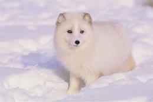

El Zorro Polar
El zorro polar, también conocido como zorro ártico (Vulpes lagopus), es un mamífero pequeño que habita en las regiones árticas de América del Norte, Europa y Asia. Aquí tienes un resumen de sus características y hábitat:

Características
-Adaptaciones: Tiene un pelaje denso que cambia de color según la estación; es blanco en invierno y marrón o gris en verano, lo que le ayuda a camuflarse.
-Tamaño: Su tamaño varía, pero generalmente mide entre 50 y 68 cm de longitud, con una cola que añade otros 30 cm.
-Alimentación: Es carnívoro y se alimenta de pequeños mamíferos, aves, huevos y, en ocasiones, restos de carroña.
Hábitat
-Distribución: Vive en tundras, regiones nevadas y zonas costeras del Ártico.
-Clima: Está adaptado a las bajas temperaturas y puede soportar climas extremos.
Comportamiento
-Social: Suele ser solitario, aunque puede formar grupos familiares.
-Reproducción: La temporada de apareamiento es en primavera, y las hembras dan a luz a una camada de 5 a 10 cachorros en un nido.
Conservación
- El zorro polar enfrenta amenazas debido al cambio climático y la pérdida de su hábitat. Aunque no está en peligro inmediato, su población se ve afectada por la reducción del hielo marino.
Este pequeño pero resistente mamífero es un ejemplo fascinante de adaptación a entornos extremos.